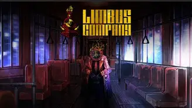

Limbus Company is a gacha game where you play as Dante and take control of 12 sinners, the sinner are part of a division of Limbus Company, the in-story one,
called the LCB, aka the Limbus Company Bus department, because they use a bus to travel places. The story is split up into multiple cantos, which are sections that
long poems are divided into, the most prominent example of this being in Dante Alighieri's "Divine Comedy"(more on that reference in the Main Characters section).
As of now, the cantos we have right now are categorized under "Inferno" (which is another Divine Comedy reference as it is divided into three parts: infernus
being hell, purgatorio being purgatory, and Paradiso being heaven). Throughout this game you will see many references to different pieces of literature from all
around the world. The newest canto even convinced me to read "The Stranger" by Albert Camus, but I digress. The story of Limbus Company takes place chronologically
after the two games released before it, Library of Ruina and Lobotomy Corporation(which I believe are really good games and have completed both) and it is set
in the fictional city aptly named "The City". The City is split into 26 different districts, each district having a "backstreets", which is the slums, and a
"wing" which is safer and has a higher quality of life than the backstreets because, as the name implies, it is protected by a corporation. Furthermore, each
district corresponds to a different letter of the alphabet and subsequently the name of the corporation, for example, District K is ruled by K Corp. However,
all districts have, for lack of a better word, monarchs/moderators watching over them called the "Head", "Eye", and "Claw". The Head makes taboos that people
nor corporations can't break or else they'll have to face an arbiter, a really powerful augmented enforcer of the Head, and a claw for the things that might
have been made by that taboo. Something I almost forgot to mention was that there is a webcomic called "Leviathan" that acts as a prequel to the story,
establishing the backstory of a key character in the story, Vergillius.

GAME OVERVIEW
Clashing and Attacks
As I mentioned before, this game is a gacha game, but you might be asking, how do they incorporate this into actual gameplay if there's always gonna be only 12
sinners? Well, in this game, there's a concept called "Mirror Worlds", which are alternate versions of yourself from different timelines. The concept of Mirror
Worlds are used to give the Sinners different attacks and pulling for mirror world identities, usually shortened to identities or IDs, is how Project Moon
incoporates the gacha aspect of Limbus Company. In this game, the story is made up of cantos that contain many level nodes, which could be a battle node, story
node, or a combination of both. In battle nodes, the sinners are given 2 moves and you have to choose between them, but there are two different battle nodes
(unfocused and focused), the difference between them being that unfocused battles don't allow you to choose who your sinners target while focused battles allow
you to choose who your sinner gets to attack. You might also be asking, "How does fighting work in Limbus?", and it can geniunely be explained through gambling.
In Limbus, if two characters are attacking eachother, their attack skills clash. Normally, which means outside of Mirror Dungeons, attack skills have a set base power,
number of coins, and how much those coins will increase or decrease the final power by, with whoever having the higher final power winning the clash. However, if they
have the same amount of final power, then the clash is repeated. Clashes are regulated using SP (Sanity Points), which are within a range of -45 and 45, which raise
the odds of rolling heads on a coin by the amount of SP you have. Additionally, if you win a clash, you gain SP.
On the other hand, E.G.O.s, which will be explained more in depth in the Lobotomy Corporation section, are attack skills that can be selected whenever you can
and they have a very high amount of clashpower along with different passives that are added after landing the attack. However, E.G.O.s take away a massive
amount of SP just before activating the attack, with a chance to corrode the sinner if they don't have enough SP, which make them attack random people,
including the other sinners. Additionally, another type of skill you can use at will is the defense skill, which can range from just tanking an attack, to
being a counter attack that's almost necessary for some character in the beginning of the fight(cough cough Mao Faust cough cough).
Music in Limbus
Apart from combat and story, what's the next most important parts of any game? DING DING DING, you guessed it right! (I hope) ITS MUSIC AND VISUALS.
The most notable/memorable composer for music and songs in general for Limbus Company is a band called Mili. I LOVE all of the songs they make
for the finals bosses for each canto because they somehow manage to convey the story of each canto within the songs, and the songs sound good in general.
I, personally, think that Hero and Rendezvous are the best songs that Mili has made for limbus cantos 7 and 10 respectively. I also think Mili is an amazing
band because of their mastery over many different genres that they use to fit the situation in a story. You might be asking "If Mili produces the songs for
final bosses, then who creates the music for regular levels?", and the answer to that is Studio EIM. They create the songs for all non-vocal music that is
used in limbus which can range from background music in a story node to battle music in a battle node.
This is the song that plays in canto 6, "The Heartbreaking". Through the Patches of Violet
Visuals Story-wise and Battle-wise
One thing I forgot to mention is that Limbus Company is also part visual novel, meaning that most story is textual rather than visual. In Limbus Company,
visuals can be seperated into 2 different categories: story and battle. In story nodes, there is a background picture that shows the setting
of the story and it's used to set up some information and sometimes set the mood. On top of the background art, there are sprites of the characters included that
appear when they start talking in the story. However, when a character is not talking, their sprite is darkened to show that they aren't doing anything. On the
other hand, battle visuals are set up in a similar way. In the background, there is art to show the place that the sinners are fighting in, with small sprites
of the character layered on top of it. As you could probably assume, each sprite has different animations depending on what they are doing. I almost forgot
to mention that there's another type of visual, being cutscenes. Normally, cutscenes happen during important parts of a fight or the story and they are used to
build suspense or emotion in the fight.
PERSONAL STUFF
As of writing this, I currently have 454.8 total hours on Limbus on Steam, which may or may not show how much I adore this game. (You can check how many hours
hours I have on Steam by checking my profile) If you are currently playing
Limbus or looking to play Limbus, my friend code is , and I'd love to talk to anyone who is interested in Project Moon!!